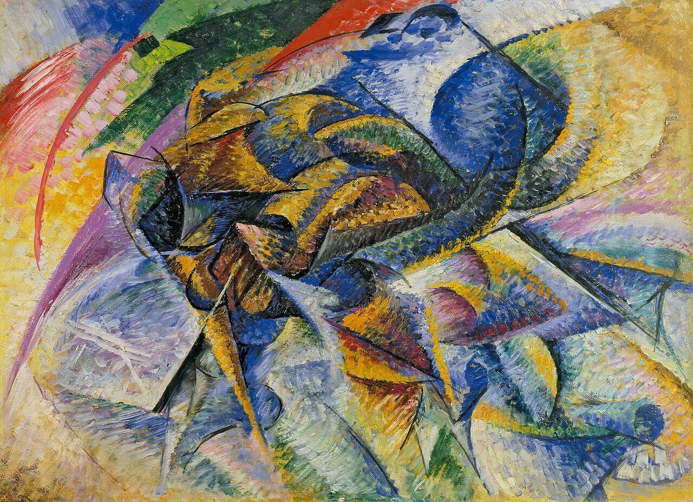

References / Painting / 417
Dynamism of a Cyclist
Umberto Boccioni breaks a racing cyclist into interlocking wedges and arcs of prismatic color, so that the rider, the machine, and the air around them read as one burst of speed.
- Source
- Wikimedia Commons: Dynamism of a Cyclist, credited to the Peggy Guggenheim Collection
- Creator
- Umberto Boccioni
- Made
- 1913
- Style
- Italian Futurism (agent-proposed, not yet reviewed by a person)
- Moods
- Fast, exuberant, mechanical
- Evidence
- Downloaded and inspected the Commons file (original 3477 × 2520 px; a 1280 × 928 px rendering was inspected and stored, because the full file was rate-limited). The Commons credit is the Peggy Guggenheim Collection. The physical work is the oil on canvas, 70 × 95 cm, in the Gianni Mattioli Collection, on long-term loan to the Peggy Guggenheim Collection, Venice, as the file description states.
- Reviewed
- Rights
- Open license, stored. License: public domain. Rights policy
,_oil_on_canvas,_70_x_95_cm,_Gianni_Mattioli_Collection,_on_long-term_loan_to_the_Peggy_Guggenheim_Collection,_Venice.jpg){kind=link}
Context
Oil on canvas, 70 × 95 cm, 1913. Gianni Mattioli Collection, which the Peggy Guggenheim Collection has hosted on long-term loan since 1997. Peggy Guggenheim Collection press release.
The same press release names Dynamism of a Cyclist with Materia among the Boccioni masterpieces of the Mattioli Collection. Peggy Guggenheim Collection.
Observed
- The figure, bent low, is built from overlapping wedges, cones, and curved planes in blue, ochre, brown, and green. No continuous outline separates rider from bicycle.
- Two long arcs, one red and one violet, sweep down the left edge; a red and a green band cut across the top.
- Thin straight black lines run diagonally through the forms, like spokes or lines of force.
- The background is short, dabbed strokes of yellow, pink, lilac, and pale blue, with no horizon.
- Pale chevrons and wedges at lower right appear to repeat the forms behind the moving figure.
Why it belongs
Compared with The City Rises, the divisionist strokes remain but the forms are now cut into Cubist-like planes. The picture shows motion by fusing the object with its environment, not by drawing a trail.
The palette is prismatic rather than flat: many saturated hues side by side, which a printed Futurist page later reduces to a few inks.
Borrow
Build a moving subject from overlapping wedges that point the same way, and let the background planes continue the same angles.
Use long sweeping arcs at one edge to give a composition a direction of travel.
Cross the forms with a few thin straight lines to suggest force and structure.
Measured
Machine-extracted by tools/image-traits.py on . Full measurement.
- Mean chroma
- 0.2
- Palette
- #2c3633 6%
- #beb5a5 5%
- #a6a197 5%
- #435046 4%
- #cac4ba 4%
- #ccb165 4%
- #ac9b6e 4%
- #8c97ac 4%

